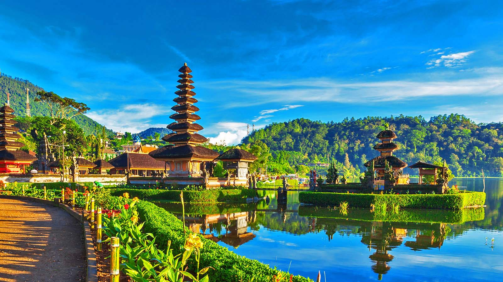

San Francisco - Sus paisajes, sus puentes, cómo se abre al Pacífico… y sobre todo la mezcla de culturas y de gentes, la han convertido en un destino único. Es la cuarta ciudad más poblada de California, con algo más de 800.000 habitantes, pero sí la más emblemática. ... Ir a California y no acercarse a San Francisco es todo un pecado.
.jpg)
.jpg)

Nueva York - Es sin duda un centro financiero, cultural y artístico sin precedentes, dentro de la dinámica de la globalización, esta ciudad es un claro ejemplo de lo que eso significa. ... Por lo que New York se convierte en una de las ciudades más importantes para visitar
Italia, país europeo con una larga costa mediterránea, influyó considerablemente en la cultura y la cocina occidental. Su capital, Roma, es hogar del Vaticano, de ruinas antiguas y de obras de arte emblemáticas. Otras ciudades importantes son Florencia, con obras maestras del renacimiento, como el "David" de Miguel Ángel y el Domo de Brunelleschi; Venecia, la ciudad de los canales


Londres, la capital de Inglaterra y del Reino Unido, es una ciudad del siglo XXI con una historia que se remonta a la época romana. En su centro se alzan el imponente Palacio del Parlamento, la torre del icónico reloj "Big Ben" y la Abadía de Westminster, lugar de las coronaciones monárquicas británicas. Al otro lado del río Támesis, la rueda de observación London Eye ofrece vistas panorámicas del complejo cultural South Bank y de toda la ciudad.
París, la capital de Francia, es una importante ciudad europea y un centro mundial del arte, la moda, la gastronomía y la cultura. Su paisaje urbano del siglo XIX está entrecruzado por amplios bulevares y el río Sena. Aparte de estos hitos, como la Torre Eiffel y la catedral gótica de Notre Dame del siglo XII, la ciudad es famosa por su cultura del café y las tiendas de moda de diseñador a lo largo de la calle Rue du Faubourg Saint-Honoré.


Japón es una nación insular del océano Pacífico con densas ciudades, palacios imperiales, parques nacionales montañosos y miles de santuarios y templos.


China es una nación muy poblada de Asia Oriental cuyos vastos paisajes abarcan praderas, desiertos, montañas, lagos, ríos y más de 14,000 km de costa.
Bali la isla mas bella, templos asomados al mar y volcanes rodeados por arrozales configuran el paisaje de esta isla de Indonesia

Rusia es la nación más grande del mundo y limita con países de Europa y Asia, al igual que con los océanos Pacífico y Ártico. Su paisaje va de la tundra y el bosque a las playas subtropicales. Es famosa por las compañías de ballet Bolshói de Moscú y Mariinski de San Petersburgo.